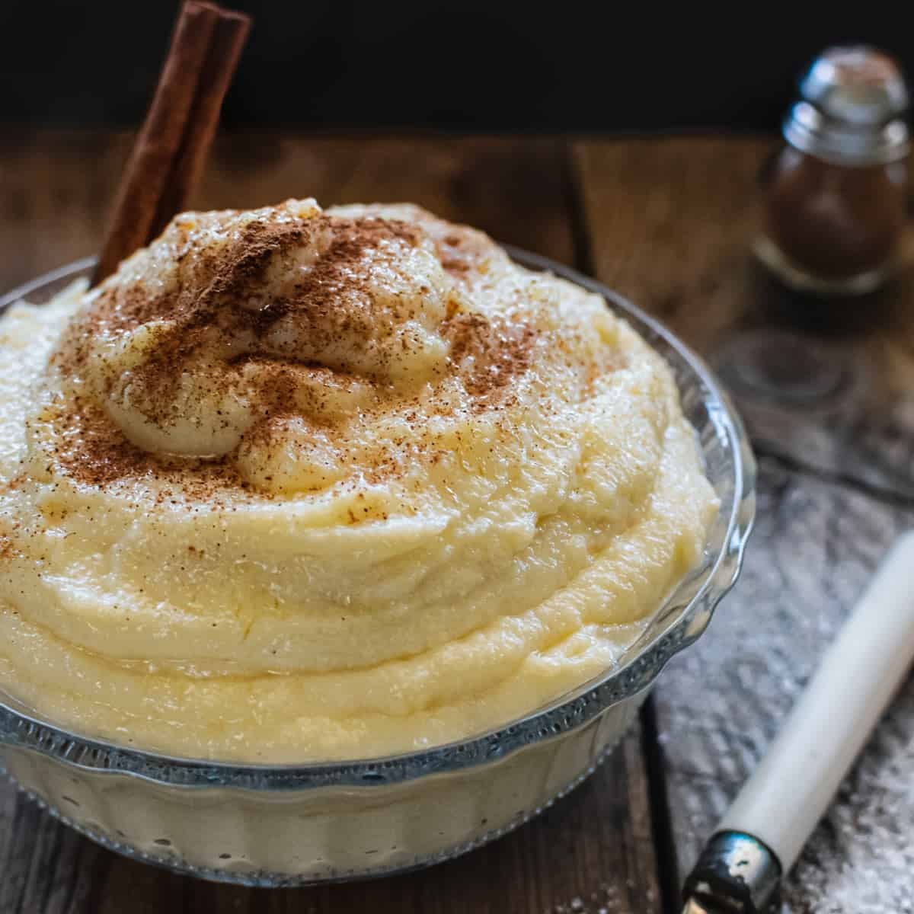

How to Make Semolina Pudding
Ingredients
- 1/2 cup semolina
- 2 cups milk
- 1/4 cup sugar
- 1 tsp vanilla extract
- 1 tbsp butter
- A pinch of cinnamon or nutmeg (optional)
- Fresh fruit, nuts, or honey for garnish (optional)
Steps
- In a medium saucepan, heat the butter over low heat until melted.
- Add the semolina and stir continuously for 2-3 minutes until lightly toasted.
- Gradually pour in the milk, stirring constantly to avoid lumps.
- Add the sugar and continue to cook on low heat, stirring frequently, until the mixture thickens.
- Stir in the vanilla extract and cook for another minute.
- Pour the pudding into serving bowls and let it cool slightly.
- Garnish with cinnamon, fresh fruit, nuts, or a drizzle of honey, if desired.
- Serve warm or chilled as per your preference!
